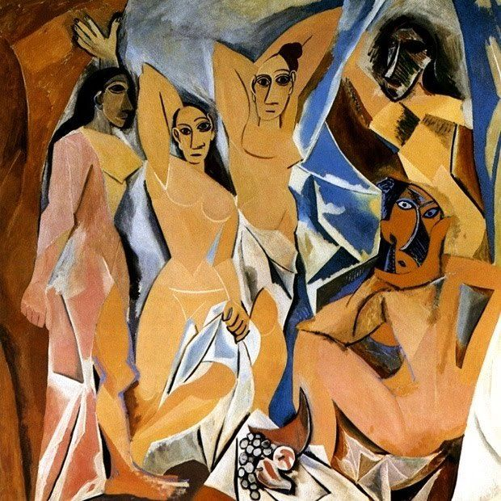

Bem-vindo de volta, Artista!
Explore novas obras, conecte-se com outros artistas e compartilhe sua criatividade.
Publique seu pensamento
Minhas ultimas Obras

Recortes do fundo do mar
Breve representação da beleza marinha
Artista: Erica Regina

A beleza de Reina
Uma representação da serenidade atrelada a autoridade
Artista:Erica Regina

A beleza de Celina
Celina é a representação do que eu acredito estar mais proximo da beleza dos anjos
Artista:Erica Regina

Apenas um sketch comum
Sem significado importante
Artista: Erica Regina
O eco da dor
A dor representada é apenas o reflexo (eco) de algo além do que está sendo mostrado
Artista: Erica Regina
Meus albuns musicais favoritos
Hard to imagine th neighbourhood ever changing
The Neibourhood
Djavan ao vivo 1999
Djavan
Recomendações da comunidade

Operários
A pintura Operários, de Tarsila do Amaral, é um dos quadros mais representativos do Modernismo brasileiro. Criada em 1933, a obra retrata a industrialização de São Paulo através de uma multidão de rostos de diferentes etnias, sugerindo a diversidade de imigrantes que trabalhavam nas fábricas. Ao fundo, a fumaça de chaminés simboliza o progresso industrial. A obra não é apenas um retrato. Ela é uma reflexão sobre as questões sociais e o trabalho no Brasil da época, mostrando a mistura de culturas que impulsionava a economia e levantando perguntas sobre a desigualdade. Com sua estética modernista, Operários se tornou um símbolo da identidade nacional e das complexas relações sociais do país.
Artista:Tarsila do Amaral
Abaporu
A obra Abaporu, de Tarsila do Amaral, é um ícone do modernismo brasileiro. Pintada em 1928, a tela apresenta uma figura humana desproporcional com uma cabeça pequena e pés e mãos gigantes, sentada sob um sol tropical. O quadro foi o principal inspirador do "Manifesto Antropófago", de Oswald de Andrade. O nome, que significa "homem que come gente" em tupi-guarani, simboliza a ideia de devorar a cultura estrangeira para criar uma arte genuinamente brasileira, livre de imitações. É uma obra-chave na busca pela identidade cultural do Brasil.
Artista:Tarcila do Amaral

As Damas d'Avignon
A obra As Damas d'Avignon, de Pablo Picasso, é um quadro de 1907 que marcou o início do cubismo. A pintura mostra cinco mulheres nuas com corpos e rostos fragmentados e geométricos, inspirados em máscaras africanas. O quadro rompeu com a arte tradicional ao apresentar as figuras de vários ângulos ao mesmo tempo, revolucionando a forma de representar a realidade e abrindo caminho para a arte moderna.
Artista: Pablo Picasso

Impresión, sol naciente
A obra Impressão, sol nascente, de Claude Monet, é o quadro que deu nome ao impressionismo. Pintado em 1872, o quadro retrata o porto de Le Havre, na França, com pinceladas soltas e rápidas. Em vez de focar nos detalhes, Monet buscou capturar a luz e a atmosfera do amanhecer. A obra simboliza a busca por uma nova forma de pintar, valorizando o momento e a percepção do artista.
Artista:Claude Monet

Starry night over the Rhone
A obra Noite Estrelada sobre o Ródano (Starry Night Over the Rhône), de Vincent van Gogh, é uma das famosas pinturas noturnas do artista, feita em 1888 em Arles, na França.O quadro mostra a cidade de Arles à noite, refletida nas águas tranquilas do rio Ródano. A obra é dominada por tons de azul escuro e amarelo vibrante. As luzes a gás da cidade brilham intensamente, refletindo na água, enquanto as estrelas no céu parecem cintilar. No primeiro plano, um casal passeia, adicionando uma sensação de tranquilidade e romance à cena. Diferente de sua obra mais famosa, "A Noite Estrelada", esta pintura transmite uma calma e serenidade. Van Gogh capturou a beleza de uma noite estrelada, mostrando seu fascínio pela luz e sua capacidade de transformar uma paisagem urbana noturna em algo mágico e expressivo.
Artista:Vincent Van Gogh